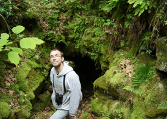
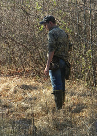
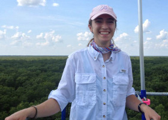
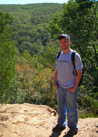

Graduate Students

Matthew Herron
Matthew received a dual B.A. from Louisiana State University A&M in 2009 in English and German. He has worked as an artist, naturalist and educator. He joined the lab in the summer of 2012.
Community Restoration Ecology
Microtopography and Disturbance-driven Land Mosaics
Plant Conservation and Citizen Science
Land Management and Sustainable Forestry
Natural History and Biodiversity
Matthew will be working on the Ouachita Wildlife Management Area (OWMA) measuring the effects of various land management methods on community structure, diversity and non-native invasion in Bottomland Hardwood Forests. Part of his work will go toward writing a management plan for the OWMA.

Jared Streeter
Jared received his B.S. in Biology from the University of Louisiana at Monroe in 2012. He is working in the Plant Ecology Lab on Carbon Sequestration/Net Ecosystem Exchange in Bottomland Hardwoods and using the Eddy Covariance Method.
Carbon Sequestration
Bottomland Hardwoods
Plant Ecology
Climate Change
Jared's project entails using Eddy Covariance Method to monitor the flux of gases such as CO2 and H20 as well as energy between the atmosphere and the terrestrial environment. Insturments are mounted atop a 36.6m (120 f) tower that continuously monitors and gathers data on greenhouse gases. The data will then be uploaded to the AmeriFlux network, member of the FLUXNET network, where to data will become part of a national and global analysis of fluxes worldwide.

Jenae' Clay
Jenae' Clay graduated from ULM with Honors in the University in May 2013 with a Bachelor's of Science in Atmospheric Science and a minor in French. Her interests include the overlapping aspects of climate and weather with the biosphere. During the summer of 2013, she received funding from Tulane University's Oscar Lee Putnam Cultural and Intellectual Enrichment grant to conduct research in the Ouachita Wildlife Management Area. The research is still ongoing, and she is currently exploring the effect of microclimates on woody seedlings in a bottomland hardwood forest undergoing secondary succession.
Former Graduate Students
Matthew Reid

Matthew is currently a Ph.D. student at University of Louisville. More details here.
Alex Fotis
Alex is currently a Ph.D. student at Ohio State University. More details here.